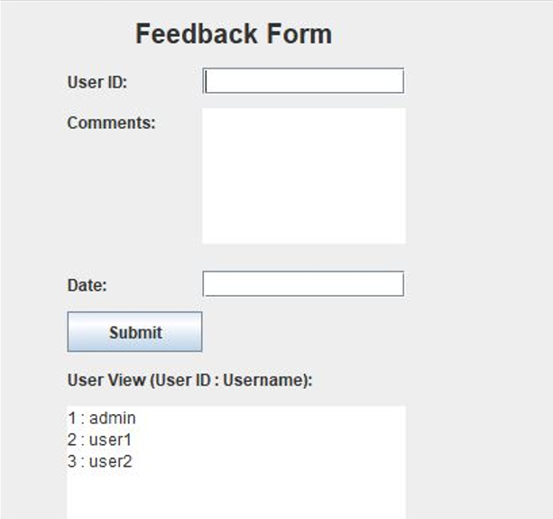

- DATABASE
Database name used: car_survey_system.
- Tables
- user Table
- SUVERYS Table
- CARMODELS Table
- CARMANUFACTURES Table
- . PLATFORMFEEDBACK TABLE
- Attributes
The user table database structure: is a central component in a car survey system, facilitating user authentication, survey participation tracking, personalization, and the management of user-related data.
SUVERYS Table database structure in a car survey system: is instrumental in gathering valuable insights that drive improvements in product development, customer satisfaction, and overall market strategy for automotive manufacturers.
CARMODELS Table database structure: is multifaceted, encompassing assessments of performance, features, customer satisfaction, and market positioning. The feedback gathered contributes to ongoing improvements, market strategies, and the overall success of the specific car model in the automotive industry.
CARMANUFACTURES Table database structure: is integral to the continuous improvement of their products, understanding market dynamics, and maintaining positive relationships with customers. The feedback gathered from surveys serves as a valuable tool for strategic decision-making and shaping the future direction of the automotive industry.
PLATFORMFEEDBACK TABLE database structure:nis crucial for optimizing the tools and technologies used to collect and analyze survey data. It contributes to a more effective, user-friendly, and secure survey environment, ultimately improving the quality and reliability of the feedback obtained from participants.
Attributes of Users Table
Here are the descriptions of the attributes/columns used in Users table:
user_id: The columns which are represents id of user which is unique value colled primary. It is set to auto-increment (AUTO_INCREMENT).
user name: The column which are represents fname abd lname of users.
password: The column which are represents password created by users.
Role: The column which are represents duties of users.
Attributes of survey Table Here are the descriptions of the attributes/columns used in surveys table:Survey_id: The column which are represents the unique identifier of each survey called PRIMARY. It is set to auto-increment (AUTO_INCREMENT). AUTO_INCREMENT means that the database will automatically generate a unique ID for each new record, typically incrementing the previous value of survey table.
User_id: The column which are represents id of user which is references to the user table value called FOREIGN KEY. It is a column of user table which has relationship between servey table.
model_id: The column which are represents id of car which is references to the carmodel table value called FOREIGN KEY. It is a column of carmodel table which has relationship between servey table.
Rating: The column which are represents or store the number of rents.
Comments : The columns which are represents the feedback from survey.
Attributes of CARMODELS Table Here are the descriptions of the attributes/columns used in CARMODELS table:Model_id: The column which are represents id of car which is unique value called PRIMARY KEY. It is set to auto-increment (AUTO_INCREMENT). AUTO_INCREMENT means that the database will automatically generate a unique ID for each new record, typically incrementing the previous value of carmodel table.
Model_name: The column which are represents the specific model name.
Year: The column which are represents year the car model was realized.
Fuel_type: The column which are represents the type of fuel car use.
Engine_size: The column which are represents the engine size of the car.
Transimition_type : The column which are represents the type of transimition.
Attributes of CARMANUFACTURES Table Here are the descriptions of the attributes/columns used in CARMANUFACTURES table:Manufacture_id : The column which are represents id of Manufactured car which is unique value called PRIMARY KEY. It is set to auto-increment (AUTO_INCREMENT). AUTO_INCREMENT means that the database will automatically generate a unique ID for each new record, typically incrementing the previous value of CARMANUFACTURES table.
Manufactuer_name: The column which are represents the manufacture’s name.
county: The column which are represents the country where the car is based.
Attributes of PLATFORMFEEDBACK Table Here are the descriptions of the attributes/columns used in PLATFORMFEEDBACK table:Feedback_id : The column which are represents id of Feedback which is unique value called PRIMARY KEY. It is set to auto-increment (AUTO_INCREMENT). AUTO_INCREMENT means that the database will automatically generate a unique ID for each new record, typically incrementing the previous value of PLATFORMFEEDBACK table.
User_id: The column which are represents id of user which is references to the user table value called FOREIGN KEY. It is a column of plantformfeedback table which has relationship between user table.
feedback_comments: The column which are represents the comments on received information.
Email: The column which are represents the email of customer.
Feedback_date: The column which are represents the date of feedback.
- JAVA
- Description
- Forms and Images
IntroductionIn this chapter I will be describing how powerful generalpurpose programming language was used to create the analyzed system. Under this chapter I will undergo full detail of how everything will function together with database that have been describe above and how it cope with full analyzed system.
Tools used to develop this system in java programming
Eclipse IDE: an integrated development environment used in computer programming. It contains a base workspace and an extensible plug-in system for customizing the environment. It is the second-most-popular IDE for Java development, and was the most popular.
JAR stands for Java Archive: It's a file format based on the popular ZIP file format and is used for aggregating many files into one. Although JAR can be used as a general archiving tool, the primary motivation for its development was so that Java applets and their requisite components.
user Form

surve Form
.png)
carmodel Form

manufacture Form

plantformfeedback Form 